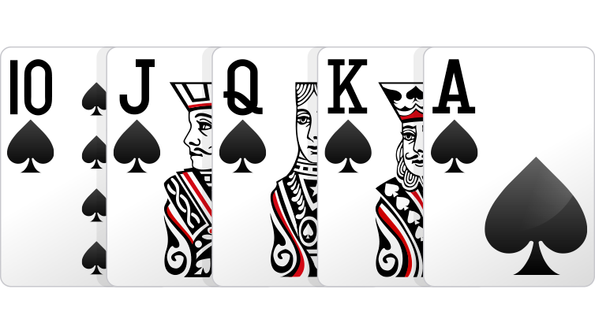
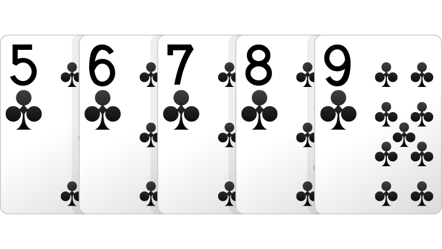
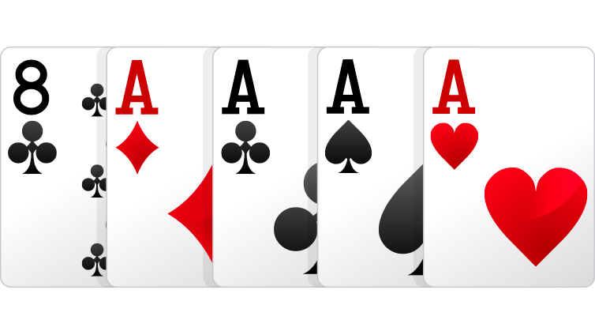
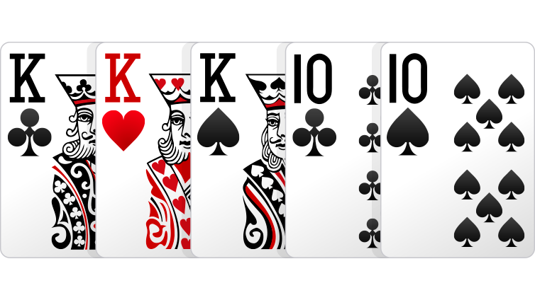
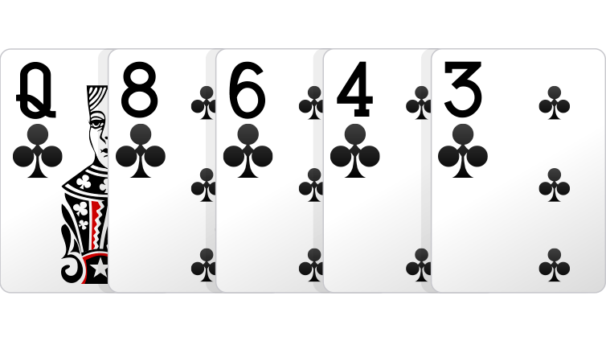
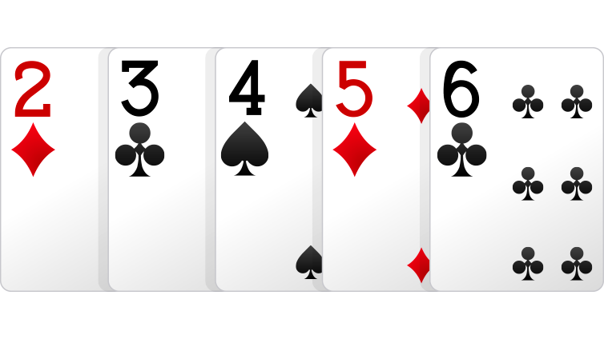
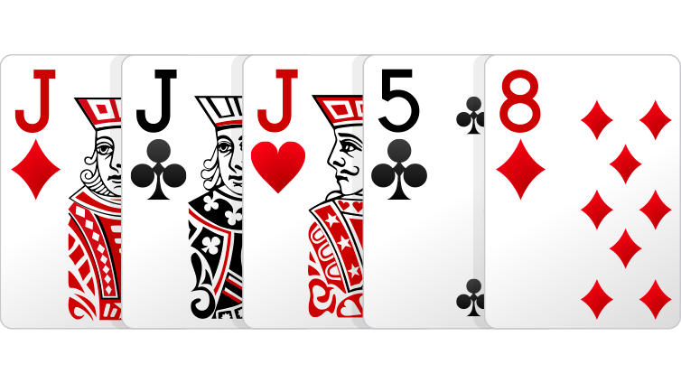
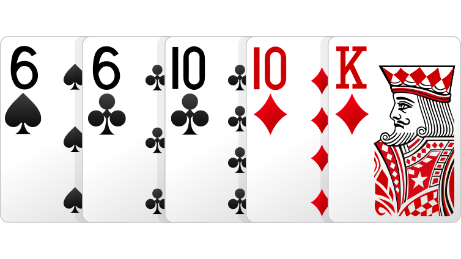
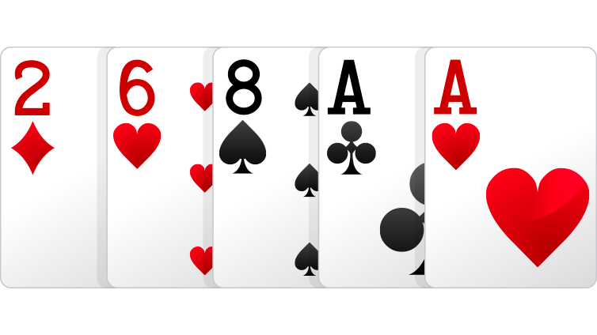
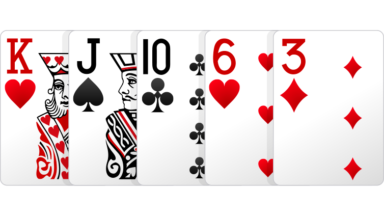

Pókerkezek rangsora
Összefoglaló
A táblázat három oszlopból áll (a kéz neve, leírása, példa kép), a táblázat fentről lefelé rangsorolva a legerősebb kéztől a leggyengébb kézig.
| Megnevezés |
Leírás |
Kép |
| Royal flöss |
Ász, király, dáma, bubi és tízes lapok együttese ugyanabban a színben. |
 |
| Színsor |
Öt egymást követő értékű lap, mind azonos színben. |
 |
| Póker |
Négy azonos értékű lap és egy plusz lap, a kísérő. |
 |
| Full |
Három azonos értékű lap és két másik, egymással azonos értékű lap. |
 |
| Flöss |
Öt azonos színű lap. |
 |
| Sor |
Öt egymást követő lap. |
 |
| Drill |
Három azonos értékű lap, két, egymástól független kísérőlappal kiegészülve. |
 |
| Két pár |
Két azonos értékű lap és két másik, egymással azonos értékű kártya, plusz egy kísérő. |
 |
| Egy pár |
Két azonos értékű lap és három különböző kártya. |
 |
| Magas lap |
Mindazok a kezek, amelyek a fenti kategóriák egyikébe sem tartoznak. |
 |